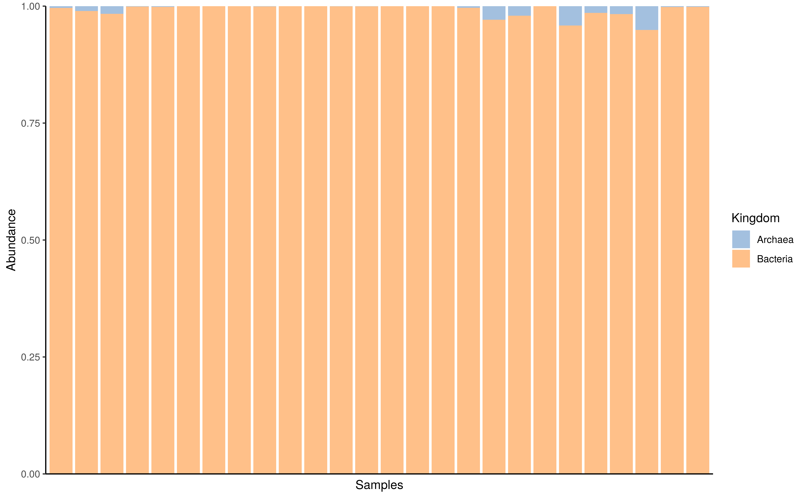
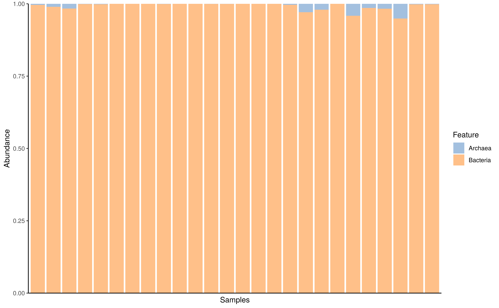
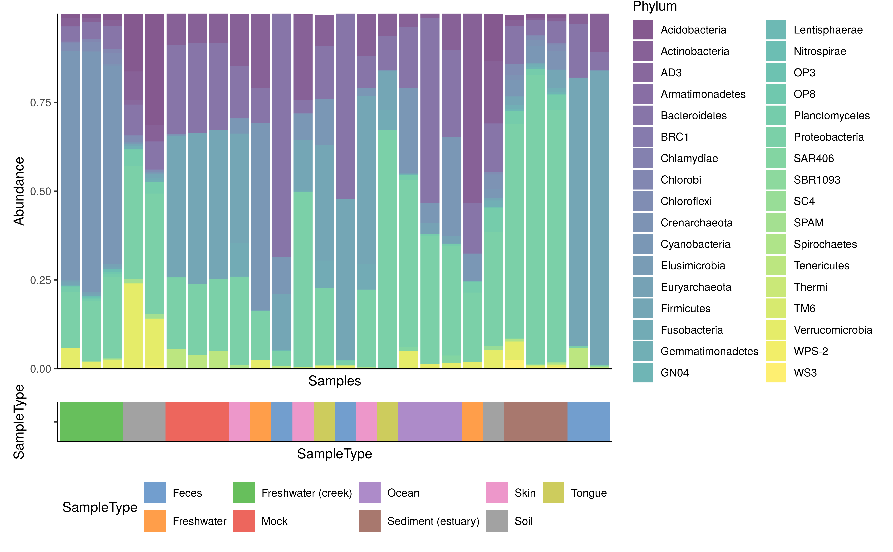
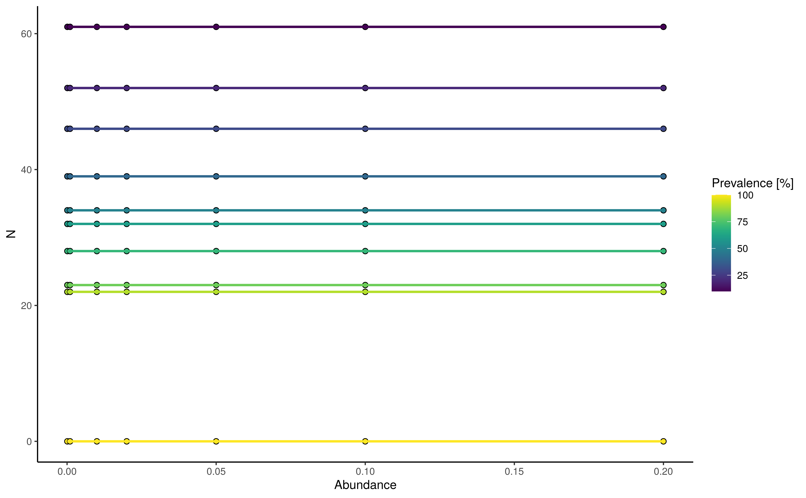

miaViz
miaViz.RmdmiaViz implements plotting function to work with
TreeSummarizedExperiment and related objects in a context
of microbiome analysis. For more general plotting function on
SummarizedExperiment objects the scater
package offers several options, such as plotColData,
plotExpression and plotRowData.
Installation
To install miaViz, install BiocManager
first, if it is not installed. Afterwards use the install
function from BiocManager and load miaViz.
if (!requireNamespace("BiocManager", quietly = TRUE))
install.packages("BiocManager")
BiocManager::install("miaViz")Abundance plotting
In contrast to other fields of sequencing based fields of research
for which expression of genes is usually studied, microbiome research
uses the more term Abundance to described the numeric data
measured and analyzed. Technically, especially in context of
SummarizedExperiment objects, there is no difference.
Therefore plotExpression can be used to plot
Abundance data of a particular feature.
plotExpression(GlobalPatterns,
features = "549322", assay.type = "counts")On the other hand, plotAbundance can be used to plot abundance by
rank. A bar plot is returned showing the relative abundance
within each sample for a given rank. At the same time the
features argument can be set to NULL
(default).
GlobalPatterns <- transformAssay(GlobalPatterns, method = "relabundance")
plotAbundance(GlobalPatterns, rank = "Kingdom", assay.type = "relabundance")
If rank is set to null however then the bars will be
colored by each individual taxon. Please note that if you’re doing this
make sure to agglomerate your data to a certain taxonomic hand before
plotting.
GlobalPatterns_king <- agglomerateByRank(GlobalPatterns, "Kingdom")
plotAbundance(GlobalPatterns_king, assay.type = "relabundance")
With subsetting to selected features the plot can be fine tuned.
prev_phylum <- getPrevalent(GlobalPatterns, rank = "Phylum",
detection = 0.01, onRankOnly = TRUE)
plotAbundance(GlobalPatterns[rowData(GlobalPatterns)$Phylum %in% prev_phylum],
rank = "Phylum",
assay.type = "relabundance")
The features argument is reused for plotting data along
the different samples. In the next example the SampleType is
plotted along the samples. In this case the result is a list, which can
combined using external tools, for example patchwork.
library(patchwork)
plots <- plotAbundance(GlobalPatterns[rowData(GlobalPatterns)$Phylum %in% prev_phylum],
features = "SampleType",
rank = "Phylum",
assay.type = "relabundance")
plots$abundance / plots$SampleType +
plot_layout(heights = c(9, 1))
Further example about composition barplot can be found at Orchestrating Microbiome Analysis (Lahti, Shetty, and Ernst 2021).
Prevalence plotting
To visualize prevalence within the dataset, two functions are
available, plotFeaturePrevalence,
plotPrevalenceAbundance and
plotPrevalence.
plotFeaturePrevalence produces a so-called landscape
plot, which visualizes the prevalence of samples across abundance
thresholds.
plotFeaturePrevalence(GlobalPatterns, rank = "Phylum",
detections = c(0, 0.001, 0.01, 0.1, 0.2))
#> Warning in plotFeaturePrevalence(GlobalPatterns, rank = "Phylum", detections =
#> c(0, : The 'plotFeaturePrevalence' function is deprecated. Use
#> 'plotRowPrevalence' instead.
plotPrevalenceAbundance plot the prevalence depending on
the mean relative abundance on the chosen taxonomic level.
plotPrevalentAbundance(GlobalPatterns, rank = "Family",
colour_by = "Phylum") +
scale_x_log10()
plotPrevalence plot the number of samples and their
prevalence across different abundance thresholds. Abundance steps can be
adjusted using the detections argument, whereas the
analyzed prevalence steps is set using the prevalences
argument.
plotPrevalence(GlobalPatterns,
rank = "Phylum",
detections = c(0.01, 0.1, 1, 2, 5, 10, 20)/100,
prevalences = seq(0.1, 1, 0.1))
Tree plotting
The information stored in the rowTree can be directly
plotted. However, sizes of stored trees have to be kept in mind and
plotting of large trees rarely makes sense.
For this example we limit the information plotted to the top 100 taxa as judged by mean abundance on the genus level.
altExp(GlobalPatterns,"Genus") <- agglomerateByRank(GlobalPatterns,"Genus")
altExp(GlobalPatterns,"Genus") <- addPerFeatureQC(altExp(GlobalPatterns,"Genus"))
rowData(altExp(GlobalPatterns,"Genus"))$log_mean <-
log(rowData(altExp(GlobalPatterns,"Genus"))$mean)
rowData(altExp(GlobalPatterns,"Genus"))$detected <-
rowData(altExp(GlobalPatterns,"Genus"))$detected / 100
top_taxa <- getTop(altExp(GlobalPatterns,"Genus"),
method="mean",
top=100L,
assay.type="counts")Colour, size and shape of tree tips and nodes can be decorated based
on data present in the SE object or by providing additional
information via the other_fields argument. Note that
currently information for nodes have to be provided via the
other_fields arguments.
Data will be matched via the node or label
argument depending on which was provided. label takes
precedent.
plotRowTree(altExp(GlobalPatterns,"Genus")[top_taxa,],
tip_colour_by = "log_mean",
tip_size_by = "detected")
Tree plot using ggtree with tip labels decorated by mean abundance (colour) and prevalence (size)
Tip and node labels can be shown as well. Setting
show_label = TRUE shows the tip labels only …
plotRowTree(altExp(GlobalPatterns,"Genus")[top_taxa,],
tip_colour_by = "log_mean",
tip_size_by = "detected",
show_label = TRUE)Tree plot using ggtree with tip labels decorated by mean abundance (colour) and prevalence (size). Tip labels of the tree are shown as well.
… whereas node labels can be selectively shown by providing a named
logical vector to show_label.
Please note that currently ggtree can only plot node
labels in a rectangular layout.
labels <- c("Genus:Providencia", "Genus:Morganella", "0.961.60")
plotRowTree(altExp(GlobalPatterns,"Genus")[top_taxa,],
tip_colour_by = "log_mean",
tip_size_by = "detected",
show_label = labels,
layout="rectangular")
Tree plot using ggtree with tip labels decorated by mean abundance (colour) and prevalence (size). Selected node and tip labels are shown.
Information can also be visualized on the edges of the tree plot.
plotRowTree(altExp(GlobalPatterns,"Genus")[top_taxa,],
edge_colour_by = "Phylum",
tip_colour_by = "log_mean")Tree plot using ggtree with tip labels decorated by mean abundance (colour) and edges labeled Kingdom (colour) and prevalence (size)
Graph plotting
Similar to tree data, graph data can also be plotted in conjunction
with SummarizedExperiment objects. Since the graph data in
itself cannot be stored in a specialized slot, a graph object can be
provided separately or as an element from the metedata.
Here we load an example graph. As graph data, all objects types
accepted by as_tbl_graph from the tidygraph
package are supported.
data(col_graph)In the following examples, the weight data is
automatically generated from the graph data. The
SummarizedExperiment provided is required to have
overlapping rownames with the node names of the graph. Using this link
the graph plot can incorporate data from the
SummarizedExperiment.
plotColGraph(col_graph,
altExp(GlobalPatterns,"Genus"),
colour_by = "SampleType",
edge_colour_by = "weight",
edge_width_by = "weight",
show_label = TRUE)
#> This graph was created by an old(er) igraph version.
#> Call upgrade_graph() on it to use with the current igraph version
#> For now we convert it on the fly...
As mentioned the graph data can be provided from the
metadata of the SummarizedExperiment.
metadata(altExp(GlobalPatterns,"Genus"))$graph <- col_graphThis produces the same plot as shown above.
Plotting of serial data
if(!requireNamespace("miaTime", quietly = TRUE)){
remotes::install_github("microbiome/miaTime", upgrade = "never")
}
# Load data from miaTime package
library("miaTime")
data(SilvermanAGutData, package="miaTime")
tse <- SilvermanAGutData
tse <- transformAssay(tse, method = "relabundance")
taxa <- getTop(tse, 2)Data from samples collected along time can be visualized using
plotSeries. The x argument is used to
reference data from the colData to use as descriptor for
ordering the data. The y argument selects the feature to
show. Since plotting a lot of features is not advised a maximum of 20
features can plotted at the same time.
plotSeries(tse,
x = "DAY_ORDER",
y = taxa,
colour_by = "Family")If replicated data is present, data is automatically used for
calculation of the mean and sd and plotted as
a range. Data from different assays can be used for plotting via the
assay.type.
plotSeries(tse[taxa,],
x = "DAY_ORDER",
colour_by = "Family",
linetype_by = "Phylum",
assay.type = "relabundance")Additional variables can be used to modify line type aesthetics.
plotSeries(tse,
x = "DAY_ORDER",
y = getTop(tse, 5),
colour_by = "Family",
linetype_by = "Phylum",
assay.type = "counts")Plotting factor data
To visualize the relative relations between two groupings among the
factor data, two functions are available for the purpose;
plotColTile and plotRowTile.
data(GlobalPatterns, package="mia")
se <- GlobalPatterns
plotColTile(se,"SampleType","Primer") +
theme(axis.text.x.top = element_text(angle = 45, hjust = 0))
DMN fit plotting
Searching for groups that are similar to each other among the
samples, could be approached with the Dirichlet Multinomial Mixtures
(Holmes, Harris, and Quince 2012). After
using runDMN from the mia package, several k
values as a number of clusters are used to observe the best fit (see
also getDMN and getBestDMNFit). To visualize
the fit using e.g. “laplace” as a measure of goodness of fit:
data(dmn_se, package = "mia")
names(metadata(dmn_se))
#> [1] "DMN"
# plot the fit
plotDMNFit(dmn_se, type = "laplace")
#> Warning in .local(x, name, type, ...): 'getDMN' is deprecated.
#> Use 'addCluster' instead.
#> See help("Deprecated") and help("Now runDMN and calculateDMN are deprecated. Use addCluster with DMMParam parameter and full parameter set as true instead.-deprecated").Serial data ordination and trajectories
Principal Coordinates Analysis using Bray-Curtis dissimilarity on the
hitchip1006 dataset:
library(miaTime)
data(hitchip1006, package = "miaTime")
tse <- hitchip1006
tse <- transformAssay(tse, method = "relabundance")
## Ordination with PCoA with Bray-Curtis dissimilarity
tse <- runMDS(tse, FUN = vegan::vegdist, method = "bray", name = "PCoA_BC",
assay.type = "relabundance", na.rm = TRUE)
# plot
p <- plotReducedDim(tse, dimred = "PCoA_BC")
pRetrieving information about all available trajectories:
library(dplyr)
# List subjects with two time points
selected.subjects <- names(which(table(tse$subject)==2))
# Subjects counts per number of time points available in the data
table(table(tse$subject)) %>% as.data.frame() %>%
rename(Timepoints=Var1, Subjects=Freq)Lets look at all trajectories having two time points in the data:
# plot
p + geom_path(aes(x=X1, y=X2, group=subject),
arrow=arrow(length = unit(0.1, "inches")),
# combining ordination data and metadata then selecting the subjects
# Note, scuttle::makePerCellDF could also be used for the purpose.
data = subset(data.frame(reducedDim(tse), colData(tse)),
subject %in% selected.subjects) %>% arrange(time))+
labs(title = "All trajectories with two time points")+
theme(plot.title = element_text(hjust = 0.5))Filtering the two time point trajectories by divergence and displaying top 10%:
library(miaTime)
# calculating step wise divergence based on the microbial profiles
tse <- getStepwiseDivergence(tse, group = "subject", time_field = "time")
# retrieving the top 10% divergent subjects having two time points
top.selected.subjects <- subset(data.frame(reducedDim(tse), colData(tse)),
subject %in% selected.subjects) %>%
top_frac(0.1, time_divergence) %>% select(subject) %>% .[[1]]
# plot
p + geom_path(aes(x=X1, y=X2,
color=time_divergence, group=subject),
# the data is sorted in descending order in terms of time
# since geom_path will use the first occurring observation
# to color the corresponding segment. Without the sorting
# geom_path will pick up NA values (corresponding to initial time
# points); breaking the example.
data = subset(data.frame(reducedDim(tse), colData(tse)),
subject %in% top.selected.subjects) %>%
arrange(desc(time)),
# arrow end is reversed, due to the earlier sorting.
arrow=arrow(length = unit(0.1, "inches"), ends = "first"))+
labs(title = "Top 10% divergent trajectories from time point one to two")+
scale_color_gradient2(low="white", high="red")+
theme(plot.title = element_text(hjust = 0.5))Plotting an example of the trajectory with the maximum total divergence:
# Get subject with the maximum total divergence
selected.subject <- data.frame(reducedDim(tse), colData(tse)) %>%
group_by(subject) %>%
summarise(total_divergence = sum(time_divergence, na.rm = TRUE)) %>%
filter(total_divergence==max(total_divergence)) %>% select(subject) %>% .[[1]]
# plot
p + geom_path(aes(x=X1, y=X2, group=subject),
data = subset(data.frame(reducedDim(tse), colData(tse)),
subject %in% selected.subject) %>% arrange(time),
arrow=arrow(length = unit(0.1, "inches")))+
labs(title = "Longest trajectory by divergence")+
theme(plot.title = element_text(hjust = 0.5))More examples and materials are available at Orchestrating Microbiome Analysis (Lahti, Shetty, and Ernst 2021).
Session info
sessionInfo()
#> R version 4.4.1 (2024-06-14)
#> Platform: x86_64-pc-linux-gnu
#> Running under: Ubuntu 22.04.4 LTS
#>
#> Matrix products: default
#> BLAS: /usr/lib/x86_64-linux-gnu/openblas-pthread/libblas.so.3
#> LAPACK: /usr/lib/x86_64-linux-gnu/openblas-pthread/libopenblasp-r0.3.20.so; LAPACK version 3.10.0
#>
#> locale:
#> [1] LC_CTYPE=en_US.UTF-8 LC_NUMERIC=C
#> [3] LC_TIME=en_US.UTF-8 LC_COLLATE=en_US.UTF-8
#> [5] LC_MONETARY=en_US.UTF-8 LC_MESSAGES=en_US.UTF-8
#> [7] LC_PAPER=en_US.UTF-8 LC_NAME=C
#> [9] LC_ADDRESS=C LC_TELEPHONE=C
#> [11] LC_MEASUREMENT=en_US.UTF-8 LC_IDENTIFICATION=C
#>
#> time zone: UTC
#> tzcode source: system (glibc)
#>
#> attached base packages:
#> [1] stats4 stats graphics grDevices utils datasets methods
#> [8] base
#>
#> other attached packages:
#> [1] patchwork_1.2.0 scater_1.33.2
#> [3] scuttle_1.15.1 miaViz_1.13.8
#> [5] ggraph_2.2.1 ggplot2_3.5.1
#> [7] mia_1.13.27 MultiAssayExperiment_1.31.4
#> [9] TreeSummarizedExperiment_2.13.0 Biostrings_2.73.1
#> [11] XVector_0.45.0 SingleCellExperiment_1.27.2
#> [13] SummarizedExperiment_1.35.1 Biobase_2.65.0
#> [15] GenomicRanges_1.57.1 GenomeInfoDb_1.41.1
#> [17] IRanges_2.39.1 S4Vectors_0.43.1
#> [19] BiocGenerics_0.51.0 MatrixGenerics_1.17.0
#> [21] matrixStats_1.3.0 BiocStyle_2.33.1
#>
#> loaded via a namespace (and not attached):
#> [1] splines_4.4.1 ggplotify_0.1.2
#> [3] tibble_3.2.1 polyclip_1.10-6
#> [5] rpart_4.1.23 DirichletMultinomial_1.47.0
#> [7] lifecycle_1.0.4 lattice_0.22-6
#> [9] MASS_7.3-61 backports_1.5.0
#> [11] magrittr_2.0.3 Hmisc_5.1-3
#> [13] sass_0.4.9 rmarkdown_2.27
#> [15] jquerylib_0.1.4 yaml_2.3.9
#> [17] RColorBrewer_1.1-3 DBI_1.2.3
#> [19] minqa_1.2.7 abind_1.4-5
#> [21] zlibbioc_1.51.1 purrr_1.0.2
#> [23] yulab.utils_0.1.4 nnet_7.3-19
#> [25] tweenr_2.0.3 sandwich_3.1-0
#> [27] GenomeInfoDbData_1.2.12 ggrepel_0.9.5
#> [29] irlba_2.3.5.1 tidytree_0.4.6
#> [31] vegan_2.6-6.1 rbiom_1.0.3
#> [33] pkgdown_2.1.0 permute_0.9-7
#> [35] DelayedMatrixStats_1.27.1 codetools_0.2-20
#> [37] DelayedArray_0.31.7 ggforce_0.4.2
#> [39] tidyselect_1.2.1 aplot_0.2.3
#> [41] UCSC.utils_1.1.0 farver_2.1.2
#> [43] lme4_1.1-35.5 ScaledMatrix_1.13.0
#> [45] viridis_0.6.5 base64enc_0.1-3
#> [47] jsonlite_1.8.8 BiocNeighbors_1.23.0
#> [49] decontam_1.25.0 tidygraph_1.3.1
#> [51] Formula_1.2-5 systemfonts_1.1.0
#> [53] tools_4.4.1 ggnewscale_0.4.10
#> [55] treeio_1.29.0 ragg_1.3.2
#> [57] Rcpp_1.0.12 glue_1.7.0
#> [59] gridExtra_2.3 SparseArray_1.5.20
#> [61] xfun_0.45 mgcv_1.9-1
#> [63] dplyr_1.1.4 withr_3.0.0
#> [65] BiocManager_1.30.23 fastmap_1.2.0
#> [67] boot_1.3-30 bluster_1.15.0
#> [69] fansi_1.0.6 digest_0.6.36
#> [71] rsvd_1.0.5 R6_2.5.1
#> [73] gridGraphics_0.5-1 textshaping_0.4.0
#> [75] colorspace_2.1-0 lpSolve_5.6.20
#> [77] utf8_1.2.4 tidyr_1.3.1
#> [79] generics_0.1.3 data.table_1.15.4
#> [81] DECIPHER_3.1.4 graphlayouts_1.1.1
#> [83] httr_1.4.7 htmlwidgets_1.6.4
#> [85] S4Arrays_1.5.4 pkgconfig_2.0.3
#> [87] gtable_0.3.5 htmltools_0.5.8.1
#> [89] bookdown_0.40 scales_1.3.0
#> [91] ggfun_0.1.5 knitr_1.48
#> [93] rstudioapi_0.16.0 reshape2_1.4.4
#> [95] checkmate_2.3.1 nlme_3.1-165
#> [97] nloptr_2.1.1 cachem_1.1.0
#> [99] zoo_1.8-12 stringr_1.5.1
#> [101] parallel_4.4.1 vipor_0.4.7
#> [103] foreign_0.8-87 desc_1.4.3
#> [105] pillar_1.9.0 grid_4.4.1
#> [107] vctrs_0.6.5 slam_0.1-50
#> [109] BiocSingular_1.21.2 beachmat_2.21.4
#> [111] cluster_2.1.6 beeswarm_0.4.0
#> [113] htmlTable_2.4.2 evaluate_0.24.0
#> [115] mvtnorm_1.2-5 cli_3.6.3
#> [117] compiler_4.4.1 rlang_1.1.4
#> [119] crayon_1.5.3 labeling_0.4.3
#> [121] mediation_4.5.0 plyr_1.8.9
#> [123] fs_1.6.4 ggbeeswarm_0.7.2
#> [125] stringi_1.8.4 viridisLite_0.4.2
#> [127] BiocParallel_1.39.0 munsell_0.5.1
#> [129] lazyeval_0.2.2 Matrix_1.7-0
#> [131] sparseMatrixStats_1.17.2 highr_0.11
#> [133] igraph_2.0.3 memoise_2.0.1
#> [135] RcppParallel_5.1.8 bslib_0.7.0
#> [137] ggtree_3.13.0 ape_5.8